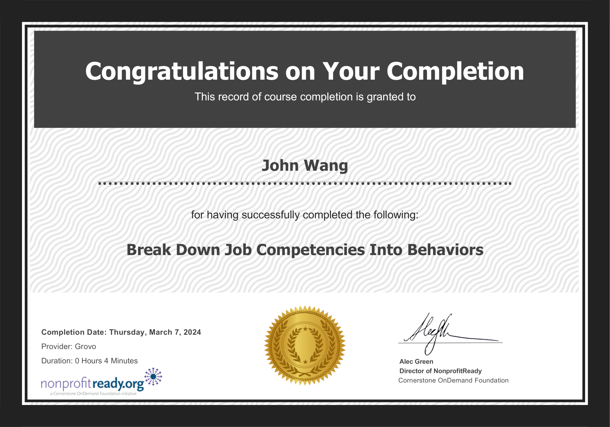
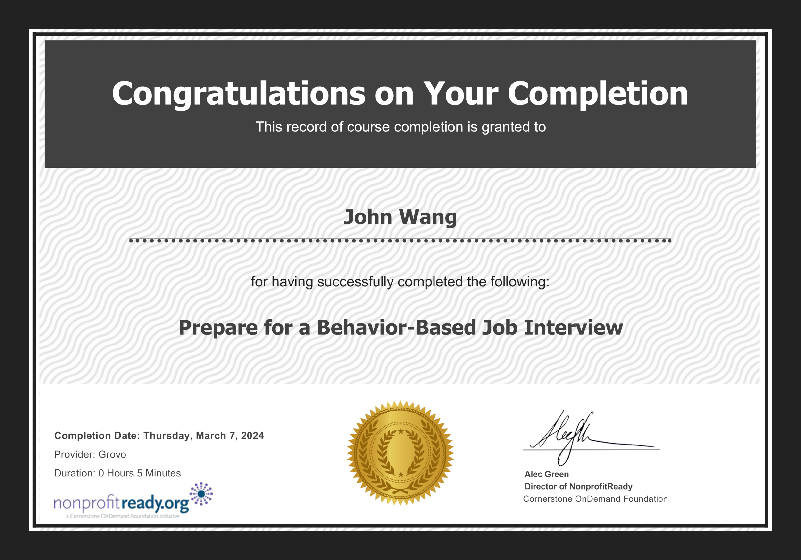
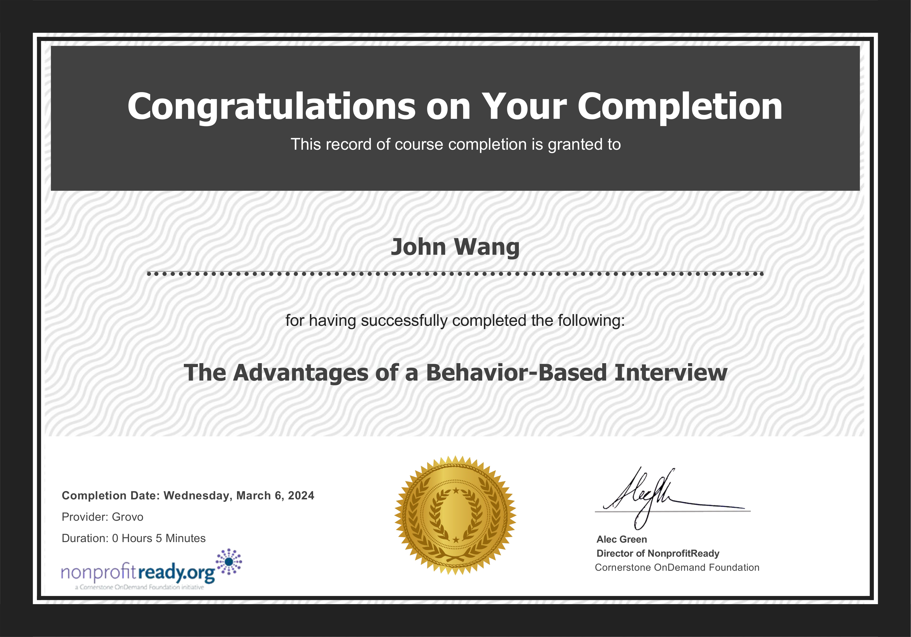

John's Hiring Certificates
Behavior-Based Interview (3)
Break Down Job Competencies Into Behaviors from NonprofitReady

Prepare for a Behavior-Based Interview from NonprofitReady

The Advantages of a Behavior-Based Interview from NonprofitReady
